- Demographics
- The islands are inhabited by the descendants of the Bounty mutineers and the Tahitians who accompanied them, an event retold in numerous books and films. This history is still apparent in the surnames of many of the islanders. With only about 56 inhabitants, originating from four main families, Pitcairn is the least populous jurisdiction in the world.
- Geography
- Pitcairn Island, more than 2,200 km southeast of Tahiti, sits alone between Peru and New Zealand at 25° south latitude
and 130° west longitude. Its nearest inhabited neighbor is Mangareva, a small island in French Polynesia 490 km to the northwest.
Easter Island lies 1,900 km to the east.
A high volcanic island, Pitcairn reaches 347 meters at the Pawala Ridge and is bounded by rocks and high cliffs on all sides. There's no coral reef, and breakers roll right in to the shore. - 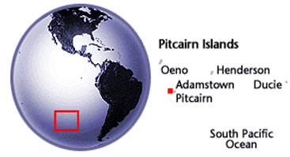
- The island is only 4.5 square km, almost half of which is fertile ground and well suited for human habitation. The uninhabited "nearby" islands of Henderson, Ducie, and Oeno belong to Pitcairn. The tiny colony controls an exclusive economic zone of 800,000 square km, an important reason why Britain is in no hurry to leave.
- Landscape
- 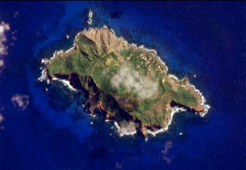
- The islands are each unique, with differing origins. Pitcairn is distinctly volcanic, jutting steeply out of the ocean with a peak of 1106 ft, seemingly a stone's throw from the shoreline (in any direction). As such it has very little of what would be called a "beach". However, the word "cliff" gets used a lot and harbours are hard to come by. Bounty Bay hardly deserves the name, consisting of a small indentation in the shoreline with water deep enough only for small boats without keels and a small sea-level landing area connected via the Hill of Difficulty to Adamstown. It is the only island of the group with fresh water sources.
-
Remote Henderson Island, UNESCO World Heritage site Henderson is by far the largest island with an area of more than 14 square miles (37.3 km²) - more than eight times larger than Pitcairn but with a largely inaccessible interior. It's a flat coral formation, but raised 50-100 feet above sea level by volcanic activity. There are caves along its shoreline which served as either tombs or ill-fated residences to an ancient people (remember: no fresh water). It might be suitable for building an airstrip if it weren't for all the endangered seabirds that find it an ideal spot to land.
- 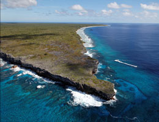
Henderson Island- 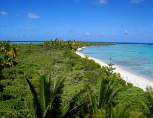
Oeno Island- 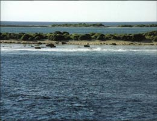
Ducie IslandOeno is a small, flat island (accompanied by another sandy island known as "Sandy Island") surrounded by a circular reef, a typical South-Pacific paradise with palm trees, lovely beaches, and a sheltered lagoon.
Remote Ducie Atoll Ducie is distant from the others (over 100 miles from Henderson and well over 200 from Pitcairn), a circular reef and island, popular with seabirds.
- Back To Top
- 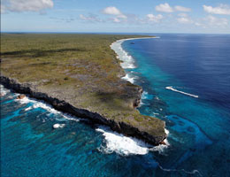
- Weather
- 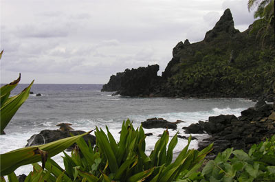
-
Pitcairn enjoys an warm maritime climate, with mean monthly temperatures varying from 19° C in August to 24° C in February. Daily temperatures can vary from 13° C to 33° C. The 2,000 mm of annual rainfall is unevenly distributed, and prolonged rainy periods alternate with droughts. Moderate easterly winds predominate with short east-to-southeast gales occurring between April and September. In combination with the pleasant subtropical climate the conditions are very beneficial for plant and animal life on the fertile volcanic soil. Because of low population figures the balance between man and nature is excellent.
The Pitcairn Islands are situated in a zone in the Pacific where hurricanes form. This means there is always a risk that a typhoon or tropical depression hits the islands.
- Getting There
The Pitcairn Islands are only accessible via boat, The first option is booking a trip on the MV Claymore II, it runs about 3 times a year so make sure the timimg is ok. In making your way to Pitcairn you will first need to fly from your homeland to Tahiti. When you book these flights you'll also need to book Air Tahiti domestic flights from Tahiti to Gambier airport (situated on a coral atoll) just off Mangareva. When you exit the airport you will take a 35 minute ferry ride across to Rikitea village and there, at the wharf you will find the Claymore II crew waiting for you.
- 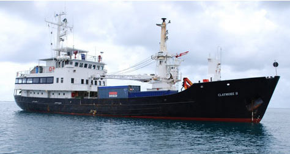
Mv Claymore II They will then transfer you and your luggage directly to the ship in their zodiac. They'll get you settled and you'll leave Mangareva for Pitcairn in the late afternoon. A couple of days later you'll arrive at Pitcairn. The Longboat will be launched to pick you up and you'll soon be riding the waves into Bounty Bay.
- 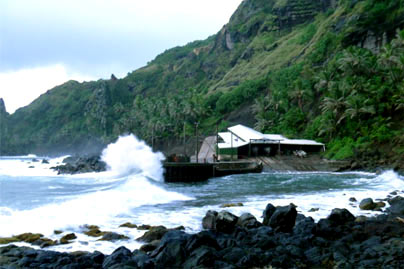
Ship's landing oint at Bounty Bay - The second option is via the SV Xplore which is a 20-meter long yacht with a capacity of 8 passengers on the boat. The speed will be about 6-9 knots depending on the winds and weather. It will be bumpy but will also be relaxing assuming decent weather and no seasickness. The cost including the expensive 4-hour flights to and from Mangareva from Pape'ete, a hotel and transfers on each; plus room and board on Pitcairn is about $4500 for a one-week trip (3 days on the island) and $5000 for 2 weeks. 2 weeks includes 10 days on Pitcairn.
- Third, a handful of trans-Pacific cruise ships will try to anchor off the coast of Pitcairn with the hopes of spending a few hours on the island. This usually isn't successful as the ship has too many passengers on board. Although often the Pitcairners will go out to the cruise ship to sell them souvenirs. The cost and time involved with these cruises can be astronomical depending on the time on board, number of stops and of course class of service.
- Back To Top
- Visa
-
Visitors staying on the island for any length of time require a license from the governor, because the irregularity of transport means they're effectively residents of the island for the next several weeks or even months. These licenses require proof of good health, the means to leave at the end of the visit (e.g., passage on an upcoming ship), at least NZ$300/week to cover your cost of living on Pitcairn, various other conditions, and a $100 fee; they are valid for six months.
If your visit is for 14 days or less and you intend to arrive and depart on the same vessel, you may apply for leave to enter on arrival at Pitcairn. There is no need for prior entry clearance. But you must ensure you can adequately maintain and accommodate yourself without recourse to public funds.
If your visit is for longer than 14 days but less than 6 months you must complete an entry clearance application form well in advance of your visit (at least 3 months is recommended). The application form should be submitted electronically to the Pitcairn Immigration Officer on immigration@pitcairn.gov.pn and copied to the Pitcairn Islands Office on admin@pitcairn.gov.pn. If you do not get an acknowledgement within 2 weeks, telephone on (649) 366 0186 to confirm your application has been received.
- Language
- There are two languages of Pitcairn Island, English and Pitkern. Pitkern is a creole language based on eighteenth-century English and Tahitian and spoken by about fifty people inland not to mention those outside Adamstown, mostly dozens of children leaving Pitcairn while becoming adults. It is partly derived from eighteenth-century English because Pitcairn Island was settled by the Bounty mutineers in the eighteenth century, and they brought some people from Taihiti with them, the language was developed as a way for the English sailors and the Tahitians to communicate. Pitkern is closely related to Norfuk spoken on Norfolk Island, where some descendents of the mutineers subsequently settled.
-
Pitkern English Whata way ye? How are you? About ye gwen? Where are you going? You gwen whihi up suppa? Are you going to cook supper? I nor believe. I don't think so. Ye like-a sum whettles? Would you like some food? Do' mine. It doesn't matter. I don't mind. Wa sing yourley doing? What are you doing? What are you up to? I se gwen ah big shep. I'm going to the ship. Humuch shep corl ya? How often do ships come here? Cum yorley sulluns! Come on all you kids! I se gwen ah nahweh. I'm going swimming. Lebbe! Let it be! Cooshoo! Good!
- Economy
-
- 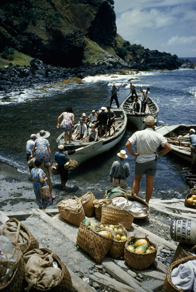
The fertile soil of the Pitcairn valleys produces a wide variety of fruits: including bananas, papaya, pineapples, mangoes, watermelons, rockmelons, passionfruit, breadfruit, coconuts, avocadoes, and citrus; and vegetables include: sweet potatoes (kumura), carrots, sweet corn, tomatoes, taro, yams, peas, and beans. Pitcairn Island is remarkably productive and its benign climate allows a wide range of tropical and temperate crops to be grown.
Fish are plentiful in the seas around Pitcairn. Spiny lobster and a large variety of fish are caught for meals and for trading aboard passing ships. Almost every day someone will go fishing, whether it is from the rocks, from a longboat or diving with a spear gun.
The Pitcairners are involved in creating crafts and curios. Typical wood carvings include sharks, fish, whales, dolphins, turtles, vases, birds, walking sticks, book boxes and the famous models of the Bounty.
- 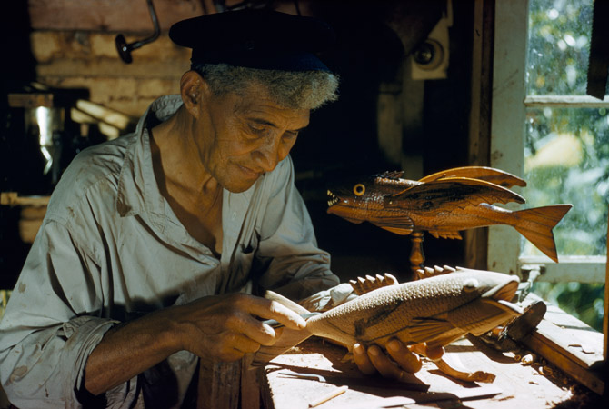
carving fish- 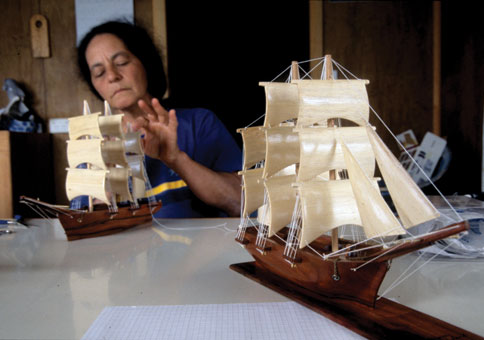
Bounty Ship modelThe major sources of revenue, until recently, have been the sale of coins and postage stamps to collectors, .pn domain names, and the sale of handicrafts to passing ships, most of which are plying the United Kingdom to New Zealand route via the Panama Canal. Trade is restricted by the jagged geography of the island, which lacks a harbour or airstrip, forcing all trade to be made by longboat to visiting ships.
- 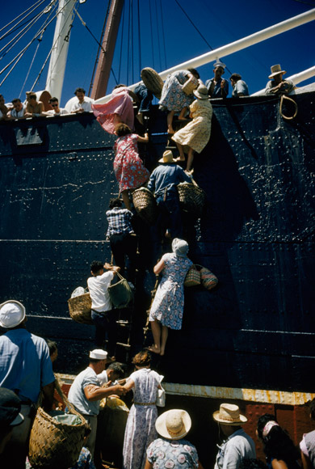
Pitcairners trading goods on a passing ship
from their longboat- 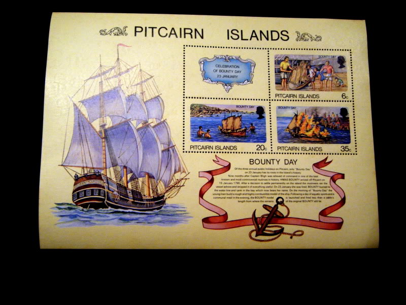
Pitcairn Stamps- 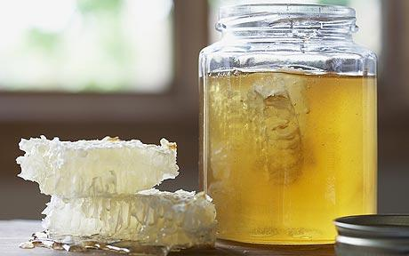
Pitcairn HoneyHoney production on Pitcairn, it was discovered, has one of the best examples of disease-free bee populations anywhere in the world and the honey produced was and remains exceptionally high in quality. Pitcairn bees were also found to be a particularly placid variety and, within a short time, the beekeepers were able to work with them wearing minimal protection. As a result, Pitcairn today exports its renowned honey to New Zealand and to the United Kingdom. The honey has become a favourite of Queen Elizabeth II and Prince Charles.
Tourism plays a major role on Pitcairn, providing the locals 80% of their annual income. Since 2009, the Government has been operating the MV Claymore II as the island's only dedicated passenger cargo vessel providing tourists with adventure tourism holidays to Pitcairn for three- or ten-day visits. Tourists stay with local families and get to experience the island's history while contributing to the local economy. Some families have invested in private self-contained units for tourists to rent. Each year approximately ten cruise ships call at the island for a few hours, generating income for the locals from the sale of souvenirs, landing fees and the stamping of passports.
Electricity Electricity on the island is provided by diesel generators operating ten hours per day (from 8 am to 1 pm, and from 5 pm to 10 pm).
- Back To Top
- Accomodation
Pitcairn Island currently has 14 registered accommodation providers offering guests a range of home stay and private accommodation. You can enjoy the full Pitcairn home stay experience - sharing all meals and amenities in the home of a local family.
- 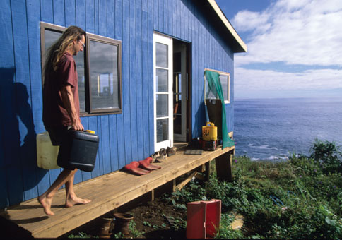
When you stay with one of Pitcairn's Accommodation Providers you will have the unique opportunity of experiencing the real everyday lives the people of Pitcairn, sharing their homes, culture, language and lifestyle.
It's a great way to get to know what it's truly like living on one of the most remote islands in the world. You can also opt for a semi private chalet, or studio unit - with optional shared meals, or an entirely private 2 or 3 bedroom bungalow or chalet rental. Whatever your choice you can rest assured your hosts will take good care of you and your stay will be the most memorable holiday experience of your life. Contact us to enquire about available accomodation options.- Back To Top